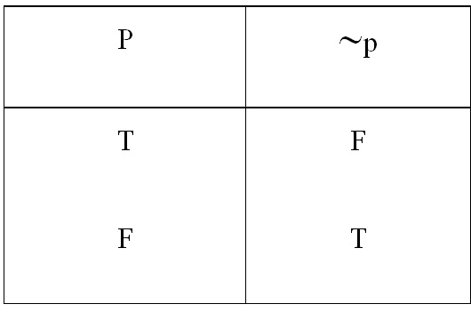

ตารางค่าความจริง
ตารางค่าความจริง เป็นตารางที่แสดงค่าความจริงที่เป็นไปได้ทั้งหมดของประพจน์ค่าความจริงของตารางจะมีเท่ากับ 2n เมื่อมี n เป็นจำนวนประพจน์
1) ค่าความจริงของประพจน์์ที่มีตัวเชื่อมเพียงตัวเดียว
ตารางค่าความจริงที่แสดงค่าความเป็นจริงเป็นไปได้ทั้งหมดของประพจน์โดยมีตัวเชื่อมเพียงตัวเดียวแสดงได้ดังนี้
1) ตารางค่าความจริงของ p^q คือ

จากตารางค่าความจริงข้างต้น เมื่อต้องการหาค่าความจริงของประพจน์ที่มีตัวเชื่อม “และ” ก็เพียงแต่ใช้ความรู้คณิตศาสตร์
พิจารณาค่าความจริงของประพจน์ที่นำมาเชื่อมว่าตรงกับกรณีใด เช่น
ต้องการหาค่าความจริงของ 3 Î {1, 3, 5, …} และ 3 เป็นจำนวนคี่
จะต้องพิจารณาค่าความจริงของ “3 Î {1, 3, 5, …}” และ “3 เป็นจำนวนคี่” ซึ่งเห็นได้ไม่ยากว่ามีค่าความจริงเป็นจริงทั้งคู่
ฉะนั้น ค่าความจริงของ 3 Î {1, 3, 5, …} และ 3 เป็นจำนวนคี่ คือ จริง
ในทำนองเดียวกัน ค่าความจริงของ เป็นจำนวนจริง และ เป็นจำนวนตรรกยะ
คือ เท็จ เพราะประพจน์ เป็นจำนวนตรรกยะ มีค่าความจริงเป็นเท็จ
2) ตารางค่าความจริง pVq คือ

ในการเชื่อมประพจน์ด้วย “หรือ” มีข้อตกลงว่าประพจน์ใหม่จะเป็นเท็จในกรณีที่ประพจน์ที่นำมาเชื่อมกันเป็นเท็จทั้งคู่ กรณีอื่นๆเป็นจริงทุกกรณี
1) “เป็นจำนวนตรรกยะ หรือ เป็นจำนวนเต็ม” มีค่าความจริงเป็นเท็จ เพราะเป็นจำนวนจริงที่ไม่ใช่จำนวนตรรกยะและไม่ใช่จำนวนเต็มจากตารางสรุปได้ว่า
2) “2 เป็นจำนวนคู่ หรือ เป็นจำนวนคี่” มีค่าความจริงเป็นจริง เพราะค่าความจริงของ “2 เป็นจำนวนคู่” คือ จริง
หมายเหตุ ความหมายของคำว่า “หรือ” ที่ใช้โดยทั่วไปมีสองกรณี
กรณีที่ 1 หมายถึง อย่างใดอย่างหนึ่งเท่านั้น เช่น ในการโยนเหรียญครั้งละ 1 เหรียญต่ละครั้งเหรียญจะขึ้นหัวหรือก้อยเพียงอย่างเดียว
กรณีที่ 2 หมายถึง อย่างใดอย่างหนึ่งหรือทั้งสองอย่าง เช่น ครูให้รางวัลแก่นักเรียนที่เรียนดีหรือช่วยกิจกรรมของโรงเรียน นักเรียนที่ได้รับรางวัลบางคนอาจเรียนดีเพียงอย่างเดียว บางคนอาจช่วยกิจกรรมของโรงเรียนเพียงอย่างเดียวแต่บางคนอาจมีคุณสมบัติทั้งสองประการก็ได้
3) ตารางค่าความจริงของ p→q คือ

ประพจน์ซึ่งตามหลังคำว่า ถ้า เรียกว่า เหตุ ส่วนประพจน์ซึ่งตามหลังคำว่า แล้ว เรียกว่า ผล
ในการเชื่อมประพจน์ด้วย “ถ้า…แล้ว…” มีข้อตกลงว่า ประพจน์ใหม่จะเป็นเท็จในกรณีที่เหตุเป็นจริงและผลเป็นเท็จเท่านั้น กรณีอื่นๆเป็นจริงทุกกรณี
1) ประพจน์ “ถ้า 0 เป็นจำนวนเต็ม แล้ว 0 เป็นจำนวนเต็มลบ” มีค่าความจริงเป็นเท็จเพราะบางประพจน์ “0 เป็นจำนวนเต็ม” และ “0 เป็นจำนวนเต็มลบ” มีค่าความจริงเป็นจริง และเท็จตามลำดับจากตารางและความรู้พื้นฐานทางคณิตศาสตร์ จะพบว่า
2) ประพจน์ “ถ้า 5 เป็นจำนวนคี่ แล้ว เป็นจำนวนคี่” มีค่าความจริงเป็นจริงเพราะประพจน์ “5 เป็นจำนวนคี่” และ “ เป็นจำนวนคี่” มีค่าความจริงเป็นจริงทั้งคู่
4)ตารางค่าความจริง p↔q คือ

การเชื่อมประพจน์ด้วยตัวเชื่อม “ก็ต่อเมื่อ” มีข้อตกลงว่า ประพจน์ใหม่จะเป็นจริงในกรณีที่ประพจน์ที่นำมาเชื่อมกันนั้นเป็นจริงด้วยกันทั้งคู่หรือเท็จด้วยกันทั้งคู่เท่านั้น กรณีอื่นๆเป็นเท็จเสมอ
1) ประพจน์ “7 หารด้วย 2 ลงตัว ก็ต่อเมื่อ 7 เป็นจำนวนคู่” มีค่าความจริงเป็นจริงเพราะทั้งประพจน์ “7 เป็นจำนวนคู่” มีค่าความจริงเป็นเท็จทั้งคู่ จากตารางหาค่าความจริงของประพจน์ที่เชื่อมด้วยตัวเชื่อมก็ต่อเมื่อได้ดังตัวอย่าง
2) ประพจน์ “ = ก็ต่อเมื่อ 2 = -2 “ มีค่าความจริงเป็นเท็จ เพราะประพจน์ “2 < 3” และ “ > ” มีค่าความจริงเป็นจริง แต่ประพจน์ “2 = -2 “ มีค่าความจริงเป็นเท็จ
3) ประพจน์ “ 2 < 3 ก็ต่อเมื่อ“ > ” มีค่าความจริงเป็นจริง เพราะประพจน์ “ 2 < 3 ก็ต่อเมื่อ“ > ” มีค่าความเป็นจริงทั้งคู่
นิเสธของประพจน์
ถ้า p เป็นประพจน์ นิเสธของประพจน์ p คือประพจน์ที่มีค่าความจริง ตรงกันข้ามกับ p นิเสธของ p เขียนด้วย ~p
ตารางค่าความจริง ~p คือ
การพิจารณาค่าความจริงของประพจน์ที่เป็นนิเสธของประพจน์เดิมทำได้ง่ายที่สุด เพราะค่าความจริงของนิเสธจะเป็นค่าตรงข้ามกับค่าความจริงของประพจน์เดิมเสมอ
หมายเหตุ 1. เรียกประพจน์ที่นำมาเชื่อมกันด้วยตัวเชื่อมต่างๆว่า ประพจน์ย่อย (atomic statement)
2.ตัวเชื่อมต่างๆ ที่กล่าวมานอกจากใช้เชื่อมในการเขียนเป็นสัญลักษณ์ในคณิตศาสตร์ด้วย เช่น
2.1 ยูเนียนของเซต A และ B คือเซตที่ประกอบด้วยสมาชิกซึ่งเป็นสมาชิกของเซต A หรือของเซต B หรือทั้งสองเซต เขียนแทนด้วย A B = { x | x A V x B }
2.2 อินเตอร์เซกชันของเซต A และ B คือเซตที่ประกอบด้วยสมาชิกซึ่งเป็นสมาชิกของเซต A และของเซต B เขียนแทนด้วย A B = {x x A ^ x B }
2.3 ถ้า ab = 0 แล้ว a = 0 หรือ b = 0 เขียนเป็น ab = 0 (a = 0 V b = 0 )